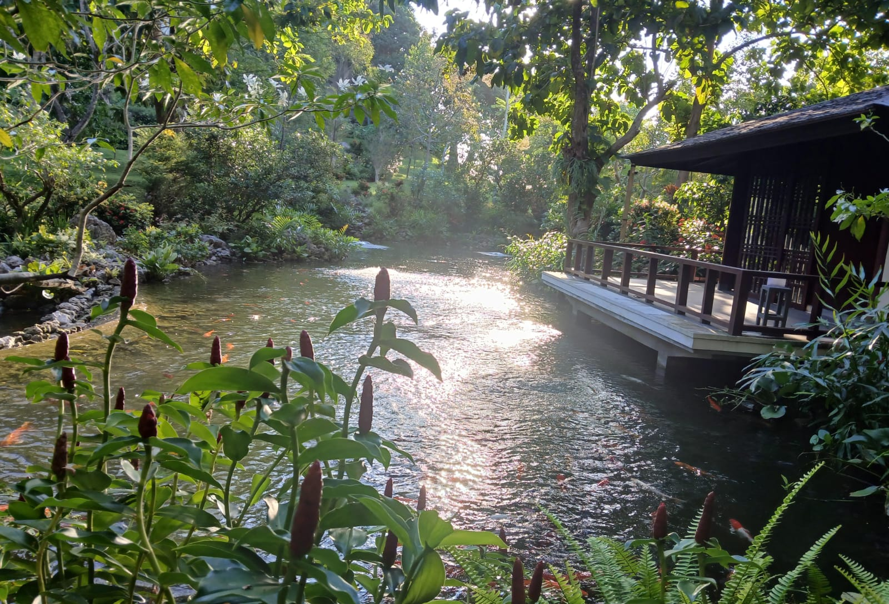

Landscape Architecture & Design
小林 祥起
Yoshitaka Kobayashi ／ 鐘軌
樹木は人よりも遥かに長く生き、過酷な試練を耐え抜いた上で、私達と触れ合っております。
Trees live far longer than humans, endure harsh trials, and only then come to touch our lives.
Pohon hidup jauh lebih lama dari manusia, menanggung ujian berat, lalu menyentuh kehidupan kita.
特別なことを成し遂げようとせず、ただ、昨日よりもほんの少しだけ、私たちの技術を磨き、彼らに触れる。その静かな積み重ねの先にこそ、樹木が誰にも見せたことのない「最高の姿」を現してくれる瞬間があると、私たちは確信しています。
We do not strive for something extraordinary — only to refine our craft a little more than yesterday, and to touch the trees with care. In that quiet accumulation lies the moment when a tree reveals its finest form to the world.
Kami tidak berusaha melakukan sesuatu yang luar biasa — hanya menyempurnakan keahlian sedikit lebih baik dari kemarin, dan menyentuh pohon dengan penuh perhatian. Dalam akumulasi yang tenang itulah tersembunyi momen ketika pohon menampilkan sosok terbaiknya.
Works を見る → View Works → Lihat Karya →News
お知らせ News Berita
-
2025.06.01
Award IFLA Asia-Pacific Region Landscape Architecture Awards にて優秀賞を受賞いたしました。 We received the Excellence Award at the IFLA Asia-Pacific Region Landscape Architecture Awards. Kami meraih Penghargaan Unggulan di IFLA Asia-Pacific Region Landscape Architecture Awards.
-
2025.04.15
Press 専門誌『LANDSCAPE DESIGN』にAYANA Resort「Tevana」プロジェクトが掲載されました。 The AYANA Resort "Tevana" project was featured in the professional journal LANDSCAPE DESIGN. Proyek AYANA Resort "Tevana" ditampilkan dalam jurnal profesional LANDSCAPE DESIGN.
-
2024.10.01
Project Jakarta Garden City 地区・日系メガモールのランドスケープ・マスタープランを着工しました。 Construction has begun on the landscape master plan for a Japanese mega mall in Jakarta Garden City. Pembangunan master plan lanskap untuk mega mal Jepang di Jakarta Garden City telah dimulai.
-
2024.03.20
Event フローリストレビュー（『月刊フローリスト』主催）フラワーコンベンションにて入賞・誌面掲載。作品名：「懸り乱れ龍」 Won a prize at the Florist Review Flower Convention. Work title: "Kagari Midare Ryu." Meraih penghargaan di Konvensi Bunga Florist Review. Judul karya: "Kagari Midare Ryu."
Profile
プロフィール Profile Profil
プロフィール写真
img で差し替え
小林 祥起
庭師名：鐘軌 ／ Yoshitaka Kobayashi
PT. TODOROKI 代表
1980年、京都の造園家「小林秀峰園」小林秀峰の長男として生まれる。京都庭常および「双葉造園」にて研鑽を積む傍ら、華道専慶流、茶道藤谷宗美氏に師事。京都の伝統文化を深く学ぶことで、庭師としての感性を研ぎ澄ます。
その後、世界各地の多様な景観を巡るランドスケープ研究の旅へ。気候や風土が形作る「庭」の本質を追求した末、2012年にインドネシア・バリ島へ拠点を移す。師である双葉造園への敬意を込め、その名の由来である「二つの八」を継承した「八十八騎（とどろき）/ PT. Todoroki Bali Zouen」を設立した。
現在はジャカルタにも拠点を広げ、インドネシア唯一の日本のランドスケープデザイン企業として活動。
Born in Kyoto, 1980.
Eldest son of landscape artist Hidehō Kobayashi of "Kobayashi Shūhōen." Trained at Kyoto Niwatsune and Futaba Zouen, while studying Kadō (Senkeiryu) and Chadō under Fujitani Sōbi.
A journey of discovery leads to Bali.
In 2012, he settled in Bali, Indonesia, founding "PT. Todoroki Bali Zouen." Now with operations also in Jakarta, PT. TODOROKI is Indonesia's only Japanese landscape design firm.
Lahir di Kyoto, 1980.
Putra sulung seniman taman Hidehō Kobayashi. Berlatih di Kyoto Niwatsune dan Futaba Zouen, sekaligus mempelajari Kadō dan Chadō.
Perjalanan penuh penemuan menuju Bali.
Pada 2012, ia mendirikan "PT. Todoroki Bali Zouen" di Bali. Kini juga beroperasi di Jakarta sebagai satu-satunya perusahaan desain lanskap Jepang di Indonesia.
Awards & Recognition
img で差し替え
IFLA Asia-Pacific Region Landscape Architecture Awards — 優秀賞
国際造園家連盟（IFLA）アジア太平洋地域賞 優秀賞。対象：AYANA Resort「Tevana」茶室庭園。役割：リード・リアライザー（設計意図の読解と空間具現化）
Excellence Award from IFLA Asia-Pacific Region. Project: AYANA Resort "Tevana Garden" Tea Room Space. Role: Lead Realizer.
Penghargaan Unggulan dari IFLA Asia-Pacific. Proyek: AYANA Resort "Tevana Garden." Peran: Lead Realizer.
img で差し替え
専門誌『LANDSCAPE DESIGN』掲載
AYANA Resort「Tevana」プロジェクトが造園専門誌『LANDSCAPE DESIGN』に掲載。
The "Tevana" project was published in the journal LANDSCAPE DESIGN.
Proyek "Tevana" diterbitkan dalam jurnal LANDSCAPE DESIGN.
img で差し替え
フローリストレビュー 入賞（『月刊フローリスト』主催）
フラワーコンベンションにて入賞・誌面掲載。出展作品名：「懸り乱れ龍（かがりみだれりゅう）」
Prize at the Florist Review Flower Convention. Work: "Kagari Midare Ryu" (Entwining Dragon of Chaos).
Penghargaan di Konvensi Bunga Florist Review. Karya: "Kagari Midare Ryu."
Project Highlights
施工実績 Works Karya
Hospitality & Commercial
-
AYANA Resort and Spa（Bali）Landscape Design & Site Direction / Lead Realizerラウンジ「After Rock」・日本食レストラン「本膳」ランドスケープデザインおよび現場指揮。茶室庭園「Tevana」リード・リアライザーとして参画。
→ IFLA Asia-Pacific Awards 優秀賞受賞 Landscape design and site direction for "After Rock" lounge and "Honzen" Japanese restaurant. Lead Realizer for tea room garden "Tevana." → IFLA Asia-Pacific Awards Excellence Award Desain lanskap untuk lounge "After Rock" dan restoran Jepang "Honzen." Lead Realizer untuk taman teh "Tevana." → IFLA Asia-Pacific AwardsPhoto: 確認中 -
Hotel Indonesia Kempinski（Jakarta）Garden Design & Construction日本食レストラン「OKU」：庭園設計・施工。 Garden design and construction for Japanese restaurant "OKU." Desain dan konstruksi taman untuk restoran Jepang "OKU."Photo: 確認中
-
AXIA South CikarangLandscape & Maintenance日系サービスアパートメント：造園および景観維持管理。 Landscaping and ongoing maintenance for a Japanese service apartment complex. Lansekap dan pemeliharaan untuk kompleks apartemen servis Jepang.Photo: 確認中
-
デルタマス地区・高級レジデンス（日本人学校隣接） Deltamas District — Luxury Residence Kawasan Deltamas — Hunian MewahLandscape Master Plan日系コミュニティの中核となる、モダン・ラグジュアリーなアパートメントの景観設計。 Landscape design for a modern luxury apartment complex serving as the core of the Japanese community. Desain lanskap untuk kompleks apartemen mewah sebagai pusat komunitas Jepang.Photo: 確認中
-
日系大型商業施設（BSD / Jakarta Garden City） Japanese Mega Mall（BSD / Jakarta Garden City） Mega Mal Jepang（BSD / Jakarta Garden City）Landscape Master Plan日系メガモールのランドスケープ・マスタープラン策定。 Landscape master plan for a Japanese mega mall. Master plan lanskap untuk mega mal Jepang.Photo: 確認中
Industrial & Research
-
YKK Indonesia FactoryJapanese Garden & Landscape Management敷地内日本庭園の造園および景観管理。 Construction and management of a Japanese garden on factory grounds. Pembangunan dan pengelolaan taman Jepang di area pabrik.Photo: 確認中
-
大手日系自動車メーカー 生産拠点（デルタマス工業団地） Major Japanese Automaker — Production Site (Deltamas) Produsen Otomotif Jepang — Lokasi Produksi (Deltamas)Environmental Greening Project工場敷地内における環境整備および緑化プロジェクト。 Environmental improvement and greening project on factory premises. Proyek perbaikan lingkungan dan penghijauan di pabrik.Photo: 確認中
-
日系化学・日用品メーカー 研究施設 Japanese Chemical & Consumer Goods — Research Facility Produsen Kimia & Barang Konsumen Jepang — Fasilitas RisetLandscape Construction & Soil Researchランドスケープ施工、および現地の土壌に適した肥料の研究・実施。 Landscape construction and research into locally adapted fertilizers. Konstruksi lanskap dan penelitian pupuk yang disesuaikan dengan tanah lokal.Photo: 確認中
-
日系自動車関連 パートナー企業 Japanese Automotive Partner Companies Perusahaan Mitra Otomotif JepangExterior & Landscape Design施設外構および景観デザインの構築。 Exterior and landscape design for facilities. Desain eksterior dan lanskap untuk fasilitas.Photo: 確認中
Private Collection
華道・プライベートコレクション Kadō & Private Collection Koleksi Kadō & Pribadi
私のデザインの原点は、華道と茶道にあります。
大切にしているのは、華道で学んだ「空間構成」の視点。まずは植物の一枝が描く線や、空間の密度をミクロの視点で徹底的に見つめる。その繊細な視点の積み重ねが、やがてダイナミックなランドスケープへと繋がっていきます。
樹木の美しさには、必ず理由があります。自然が描くかたちの背景にある、必然の「理由」を見つめること。植物が生きるために選んだ無駄のないふるまいを、私たちは設計の力に変えていく。それが、私たちのこだわりです。 Design Philosophy
The origin of my design lies in Kadō (flower arrangement) and Chadō (tea ceremony).
What I value most is the perspective of "spatial composition" learned through Kadō — first scrutinizing, at a microscopic level, the lines drawn by a single branch and the density of space. That accumulation of delicate perspective eventually connects to a dynamic landscape.
There is always a reason behind the beauty of trees. To look at the inevitable "reason" behind the forms drawn by nature, and to transform the purposeful behavior that plants choose in order to live into the power of design — that is our commitment. Design Philosophy
Asal-usul desain saya terletak pada Kadō (merangkai bunga) dan Chadō (upacara teh).
Yang paling saya hargai adalah perspektif "komposisi ruang" yang dipelajari melalui Kadō — pertama-tama mengamati secara mendalam, dari perspektif mikro, garis yang digambar oleh satu tangkai tanaman dan kepadatan ruang. Akumulasi perspektif yang halus itu akhirnya terhubung ke lanskap yang dinamis.
Selalu ada alasan di balik keindahan pohon. Melihat "alasan" yang tak terelakkan di balik bentuk yang digambar oleh alam, dan mengubah perilaku tanpa pemborosan yang dipilih tanaman untuk hidup menjadi kekuatan desain — itulah komitmen kami.
img で配置
img で配置
懸り乱れ龍
img で配置
img で配置
img で配置
img で配置
img で配置
img で配置
img で配置
How to Add Photos
各枠のコメント（<!-- ... -->）を外し <img src="photos/ファイル名.jpg" alt="作品名"> を追加するだけです。枠を増やしたい場合は <div class="gallery-item"> を複製してください。写真クリックで拡大表示されます。
Contact
お問い合わせ Contact Kontak
プロジェクトのご相談、お見積もり、取材・掲載のご依頼など、お気軽にご連絡ください。インドネシア（バリ島・ジャカルタ）国内のみならず、日本および海外からのご依頼も歓迎いたします。 We welcome inquiries about project consultations, estimates, and media coverage — from Indonesia, Japan, and beyond. Kami menerima pertanyaan mengenai konsultasi proyek, estimasi, dan peliputan media — dari Indonesia, Jepang, dan seluruh dunia.